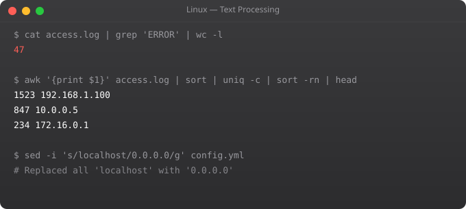

Linux text processing tools are among the most powerful in the operating system. grep, awk, and sed -- often called the "DevOps trio" -- let you search, extract, and transform text at any scale. Understanding them fluently means you can analyse log files, transform data, and automate text manipulation without writing Python scripts for every task.
grep "ERROR" app.log # Lines containing ERROR
grep -i "error" app.log # Case-insensitive
grep -v "DEBUG" app.log # Lines NOT matching
grep -r "TODO" ./src/ # Recursive search
grep -l "password" /etc/ # Only show filenames
grep -n "ERROR" app.log # Show line numbers
grep -c "ERROR" app.log # Count matching lines
grep -A 3 "FATAL" app.log # 3 lines after match
grep -B 2 "FATAL" app.log # 2 lines before match
grep -E "error|warning" app.log # Extended regex (or)
grep "^ERROR" app.log # Lines starting with ERROR
grep "Error$" app.log # Lines ending with Errorawk "{print $1}" file.txt # Print first column
awk "{print $1, $3}" file.txt # Print columns 1 and 3
awk -F: "{print $1}" /etc/passwd # : as separator -- print usernames
awk "$3 > 1000" /etc/passwd # Rows where column 3 > 1000
awk "NR > 5" file.txt # Skip first 5 lines
awk "NR==1,NR==10" file.txt # Lines 1-10
# Process nginx access log -- show IPs and paths
awk "{print $1, $7}" /var/log/nginx/access.log
# Sum a column
awk "{sum += $3} END {print sum}" file.txt
# Count occurrences
awk "{count[$1]++} END {for(k in count) print k, count[k]}" log.txtsed "s/old/new/" file.txt # Replace first occurrence per line
sed "s/old/new/g" file.txt # Replace all occurrences
sed "s/old/new/gi" file.txt # Case-insensitive replace all
sed -i "s/DEBUG/INFO/g" app.conf # Edit file IN PLACE
sed -n "5,15p" file.txt # Print lines 5-15 only
sed "/^#/d" config.txt # Delete comment lines
sed "1d" file.txt # Delete first line
sed "$ d" file.txt # Delete last line
# Real-world example: update config value
sed -i "s/max_connections = .*/max_connections = 200/" /etc/postgresql.conf# Count unique IPs in nginx log
awk "{print $1}" /var/log/nginx/access.log | sort | uniq -c | sort -rn | head -20
# Find top error types in log
grep "ERROR" app.log | awk "{print $4}" | sort | uniq -c | sort -rn
# Extract and sort unique domains from email list
awk -F@ "{print $2}" emails.txt | sort -u
# Count lines per file in a directory
for f in *.txt; do echo "$f: $(wc -l < $f) lines"; done
# Find and kill process by name
ps aux | grep nginx | grep -v grep | awk "{print $2}" | xargs killsort file.txt # Sort alphabetically
sort -n numbers.txt # Numeric sort
sort -rn numbers.txt # Reverse numeric sort
sort -u file.txt # Sort and remove duplicates
uniq file.txt # Remove consecutive duplicates
uniq -c file.txt # Count occurrences
cut -d: -f1 /etc/passwd # Cut column 1 with : delimiter
cut -c1-10 file.txt # Cut characters 1-10
tr "a-z" "A-Z" < file.txt # Translate lowercase to uppercase
tr -d "\r" < file.txt # Remove Windows line endingsgrep for finding lines matching a pattern. awk for processing columns and performing calculations on structured text. sed for find-and-replace and deleting/printing specific lines. Often combine all three with pipes.
grep -r "pattern" /path/ searches recursively. grep -l "pattern" *.txt shows only filenames. grep -rn "pattern" /etc/ shows filenames and line numbers. For very large numbers of files, use: find . -type f -exec grep -l "pattern" {} +
Omit the -i flag: sed "s/old/new/g" file.txt shows output without modifying. When satisfied, add -i for in-place edit. On macOS, sed -i requires an empty string extension: sed -i "" "s/old/new/g" file.txt
sort -u sorts and removes duplicates in one step. uniq only removes consecutive duplicates -- must sort first for complete deduplication: sort file.txt | uniq. uniq -c is useful to count occurrences after sorting.
cut -d, -f2 file.csv extracts the 2nd column. awk -F, "{print $2}" file.csv does the same with more flexibility (can print multiple columns, add conditions). For complex CSVs with quoted fields, use python csv module or csvkit.
In Part 5, we cover process management -- monitoring, controlling, and managing running programs in Linux.
← Back to Blog# nginx log format:
# 10.0.1.5 - - [01/Jan/2026:12:00:00] "GET /api/users HTTP/1.1" 200 1234 "..." "..."
LOG="/var/log/nginx/access.log"
# Top 10 IPs by request count
awk '{print $1}' $LOG | sort | uniq -c | sort -rn | head -10
# 5xx errors in last hour
awk '$9 >= 500' $LOG | wc -l
# Response time analysis (if included in log format)
awk '{print $NF}' $LOG | sort -n | awk '
BEGIN {count=0; sum=0}
{count++; sum+=$1; arr[count]=$1}
END {
print "Count:", count
print "Mean:", sum/count
print "P50:", arr[int(count*0.5)]
print "P95:", arr[int(count*0.95)]
print "P99:", arr[int(count*0.99)]
}'
# Find all 404 URLs and count them
awk '$9 == 404 {print $7}' $LOG | sort | uniq -c | sort -rn | head -20
# Requests per minute (traffic pattern)
awk '{print $4}' $LOG | cut -d: -f1,2,3 | uniq -csudo apt install jq
# Pretty print JSON
echo '{"name":"suraj","age":25}' | jq .
# Extract field
aws ec2 describe-instances | jq '.Reservations[].Instances[].InstanceId'
# Filter array
aws ec2 describe-instances | jq '.Reservations[].Instances[] | select(.State.Name == "running")'
# Combine fields
aws ec2 describe-instances | jq '.Reservations[].Instances[] | {id: .InstanceId, ip: .PublicIpAddress, state: .State.Name}'
# Count results
aws s3api list-objects --bucket my-bucket | jq '.Contents | length'